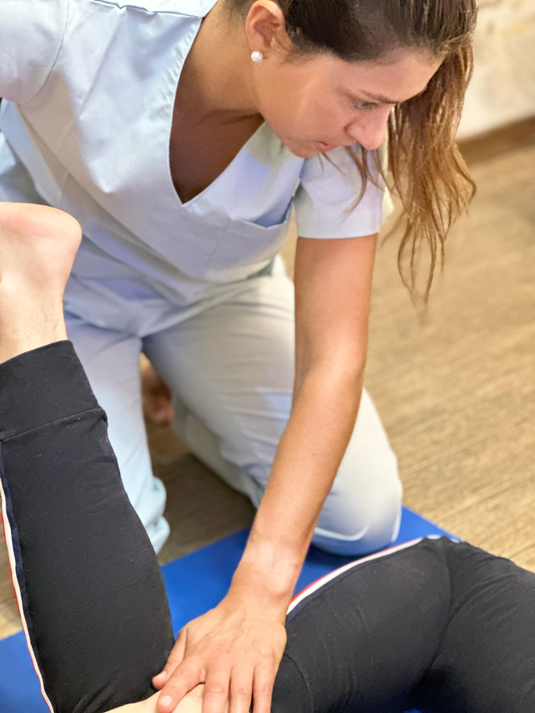
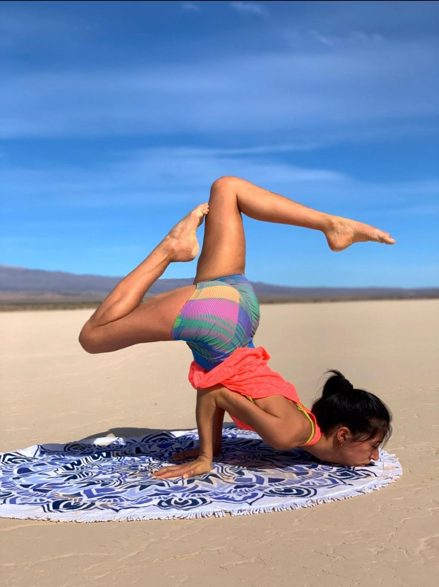

I Miei Servizi
Ogni percorso, sia esso fisioterapico, yogico o una combinazione dei due, è attentamente personalizzato. Lavoro insieme a te per definire obiettivi realistici e per fornirti gli strumenti e la consapevolezza necessari non solo per raggiungere il benessere, ma anche per mantenerlo nel tempo, prevenendo future problematiche.
Fisioterapia
La fisioterapia è fondamentale per il recupero da infortuni, la gestione del dolore cronico e il miglioramento della mobilità. Il mio approccio include:
- Valutazione Funzionale Completa: Analisi dettagliata della postura, del movimento e delle aree problematiche.
- Terapia Manuale: Tecniche specifiche (mobilizzazioni, manipolazioni, massaggio terapeutico) per ridurre il dolore e ripristinare la funzione articolare e muscolare.
- Esercizio Terapeutico Personalizzato: Programmi di esercizi mirati per rinforzare, allungare e stabilizzare.
- Riabilitazione Post-Operatoria e Sportiva: Percorsi specifici per tornare alle attività quotidiane e sportive in sicurezza.
- Educazione e Prevenzione: Consigli su postura, ergonomia e strategie per prevenire ricadute.
Adatto per: Dolore lombare, cervicalgia, sciatalgia, recupero post-intervento, lesioni sportive, tendiniti, artrosi, e molto altro.
Yoga
Lo Yoga è una disciplina straordinaria per migliorare flessibilità, forza, equilibrio e consapevolezza di sé. Offro lezioni adatte a tutti i livelli:
- Lezioni Individuali (One-to-One): Percorso personalizzato sulle tue esigenze, obiettivi e condizioni fisiche. Ideale per iniziare, approfondire la pratica o per esigenze terapeutiche specifiche.
- Lezioni di Gruppo (Piccoli Gruppi): Classi dinamiche e coinvolgenti per esplorare diversi stili di Yoga (es. Hatha, Vinyasa) e praticare Yoga Terapeutico.
- Yoga Terapeutico: Utilizzo mirato di posizioni (asana), respirazione (pranayama) e meditazione per affrontare specifiche problematiche fisiche o emotive, in integrazione con la fisioterapia.
- Yoga Prenatale/Postnatale: Supporto specifico per le donne durante la gravidanza e nel periodo successivo al parto.
Benefici: Riduzione dello stress, miglioramento della postura, aumento della flessibilità e della forza, maggiore consapevolezza corporea, miglioramento della capacità respiratoria.
Per maggiori dettagli sui servizi o per discutere le tue esigenze specifiche, non esitare a contattarmi.